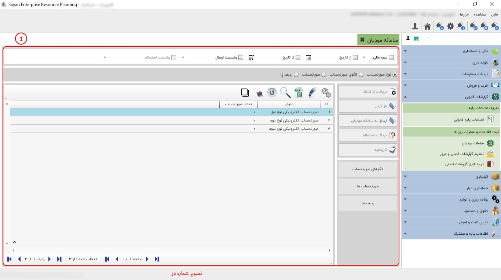
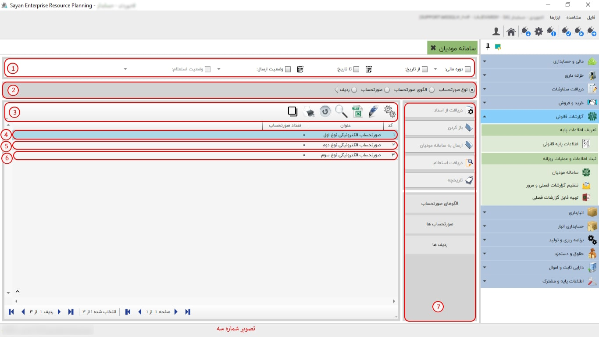
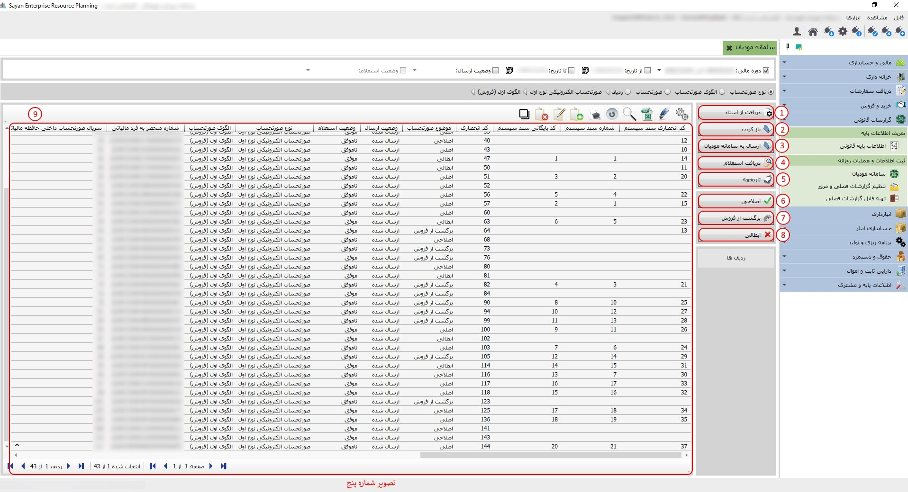

سامانه مودیان، ابزار الکترونیکی پیشرفتهای است که به منظور سادهسازی و بهینهسازی فرآیندهای مالیاتی طراحی شده است. این سامانه مودیان این امکان را به شما میدهد که اطلاعات مالیاتی خود را ثبت و مدیریت نمایید.

برای ادامه مطلب به عکس شماره دوم مراجعه نمایید.
در این بخش شما میتوانید نوع صورت الحساب فاکتور (اصلی) خود را انتخاب نمایید.
برای ادامه مطلب به عکس شماره سوم مراجعه نمایید.
-کادر شماره یک :
کادر شماره دو :
کادر شماره سوم :
-صورت الحساب الکترونیکی نوع اول (کادر شماره چهارم ):در این نوع صورتحساب، اطلاعات کامل خریدار و فروشنده ثبت میگردد. این اطلاعات شامل نوع فروش، نوع خریدار، تاریخ و زمان صورتحساب، اطلاعات هویتی خریدار و فروشنده، و مشخصات کامل خدمت میباشد.
-نکته :با توجه به اینکه در این نوع از صورتحسابهای الکترونیکی، صدور و ثبت مودیان از طریق سامانه مودیان اعتبارسنجی و پذیرش میشود، این اطلاعات بر اساس شماره اقتصادی در کارپوشه خریدار درج میگردد. در صورت تایید خریدار، این صورتحساب به عنوان اعتبار مالیاتی برای او محسوب خواهد شد.
-صورت الحساب الکترونیکی نوع دوم (کادر شماره پنجم ): این صورتحساب شامل اطلاعات کامل فروشنده و کالا یا خدمت میباشد. در این نوع صورتحساب، ثبت اطلاعات خریدار اختیاری است و از بابت این صورتحساب، اعتبار مالیاتی برای خریدار قابل احتساب نمیباشد.
-صورت الحساب الکتریکی نوع سوم (کادر شماره ششم): این نوع صورتحساب همان رسید پرداخت وجه صادره از دستگاه کارتخوان بانکی یا درگاه الکترونیکی پرداخت است که بر اساس مقررات اعلامی سازمان امور مالیاتی کشور، به عنوان پایانه فروشگاهی فروشنده و مودی پذیرفته میشود. در این نوع از صورتحسابهای الکترونیکی، صرفاً مبلغ پرداختی و مشخصات پذیرنده (شماره پذیرنده، شماره پایانه، شماره پیگیری، تاریخ و زمان صدور پرداخت و حداقل مشخصات فروشنده) وجود دارد و از بابت آن، اعتبار مالیاتی برای خریدار قابل احتساب نمیباشد. شایان ذکر است که این نوع صورتحساب الکترونیکی نیز دارای شماره منحصر به فرد مالیاتی است.
کادر شماره هفتم :
برای ادامه مطلب به عکس شماره چهارم مراجعه نمایید .
-الگوی اول فروش (کادر شماره یک ):در فیلد "الگوی اول فروش"، شما باید اطلاعات مربوط به الگوی فروش اولیه را وارد کنید. این الگو نشاندهندهی روشی است که شما برای فروش اولیه محصولات یا خدمات خود استفاده میکنید.
-الگوی دوم فروش ارزی(کادر شماره دوم ):در فیلد "الگوی اول فروش ارزی"، باید اطلاعات مربوط به روش فروش محصولات یا خدمات به مشتریان خارجی که پرداخت آن به ارز خارجی است، وارد شود.
-الگوی چهارم قرارداد پیمانکاری (کادر شماره سوم ):در فیلد "قرارداد پیمانکاری"، مشخصات و جزئیات قراردادهای پیمانکاری خود را وارد کنید. این اطلاعات شامل توافقات، تعهدات و شرایط انجام پروژههایی است که بهصورت پیمانکاری انجام میدهید.
برای ادامه مطلب به عکس شماره پنجم مراجعه نمایید.
-کادر شماره یک :در این مرحله می بایست نوع صورت الحساب اصلی (واقعی) باتوجه به اطلاعات وارد کرده خود به سامانه مودیان ارسال نمایید.
-دریافت اسناد (کادر شماره دو ):در این آیتم، میتوانید فاکتورهایی را که ثبت کردهاید و همینطور در تعیین عملیات مشخص کردهاید، دریافت کنید.
- باز کردن (کادر شماره سوم):در این آیتم، میتوانید صورتحساب خود را که از اسناد دریافت کردهاید، از طریق این آیکون مشاهده کنید.
-ارسال به سامانه مودیان (کادر شماره چهارم) :در این آیتم، پس از تکمیل هر صورتحساب (اصلی، اصلاحی، برگشت از فروش، ابطالی)، میتوانید برای ارسال به سامانه مودیان از این گزینه استفاده کنید.
-دریافت استعلام (کادر شماره پنجم) :در این آیتم، هنگامی که وضعیت استعلام شما مشخص شد میتوانید جزئیات را از طریق این آیکون مشاهده کنید.
-تاریخچه (کادر شماره ششم):در این بخش، تاریخچه عملیاتهای انجامشده روی هر صورتحساب را نشان میدهد.
-اصلاحی (کادر شماره هفتم):در صورتی که پس از صدور و ثبت صورتحساب فروش، نیاز به اصلاح اطلاعات اقلام صورتحساب به غیر از اطلاعات مربوط به خریدار یا اقلام کالا/خدمت باشد، صادرکننده صورتحساب الکترونیکی باید صورتحساب جدید (اصلاحی) که از نظر نوع و الگوی صورتحساب مطابق با صورتحساب اصلی مرجع است و شامل شماره منحصر به فرد مالیاتی صورتحساب مرجع میباشد، صادر کرده و در سامانه مودیان ثبت نماید.
-برگشت از فروش (کادر شماره هشتم ):